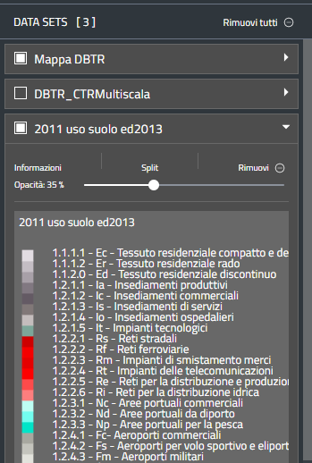

Workbench

Quando un layer viene aggiunto in qualsiasi modo alla mappa, il suo nome appare nel Workbench, il pannello a sinistra della mappa. Dal Workbench è possibile:
- Riordinare i layer per modificare l'ordine in cui sono visualizzati (quelli sopra coprono quelli sotto). Per farlo, cliccare sul nome del layer nel Workbench e trascinarlo nella posizione desiderata.
- Abilitare/disabilitare la visualizzazione dei layer sulla mappa. Per farlo, cliccare sul checkbox posto a sinistra del nome del layer.
- Zoomare sull'area del layer, se possibile, cliccando su Zoom sul layer
- Modificare l'opacità del layer, se possibile, spostando lo slider a destra di Opacità.
- Rimuovere il layer cliccando su Rimuovi. Un layer rimosso può sempre essere aggiunto nuovamente. Cliccando su Rimuovi tutti saranno rimossi tutti i layer.
- Visualizzare informazioni e metadati del layer cliccando su informazioni.